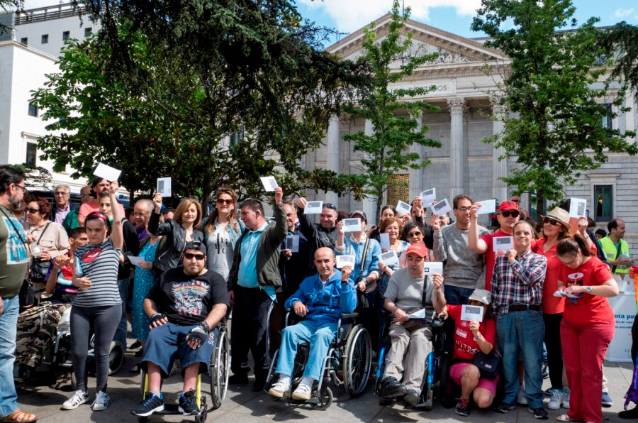

Derechos de las personas con discapacidad
Los Derechos Humanos son instrumentos que aplican en todos los países y para todas las personas sin excepción, ya que son universales e inherentes, por lo tanto todas las herramientas legales en materia de derechos humanos amparan a todo ser humano sin importar su raza, sexo, condición social o situación de discapacidad, ya que al igual que en la Declaración Universal de Derechos Humanos (1948) reúnen deseos comunes de dignidad de todos los pueblos y colectivos, por lo tanto, la ley reconoce a las personas con discapacidad derechos civiles, políticos, sociales y económicos idénticos a los de la población general, sin embargo, al ser un grupo vulnerables enfrentan situaciones adversas para poder ejercer dichos derechos, ya que el paradigma predominante en la sociedad es el asistencialismo o la beneficencia.
En este contexto, se vuelve evidente que para salvaguardar la dignidad y garantizar el goce pleno de los derechos de las personas con discapacidad hace falta la creación e implementación de leyes y programas especializados para luchar contra una sociedad llena de barreras basadas en juicios de valor errados acerca de lo que es vivir con discapacidad.
En la legislación salvadoreña la norma legal primordial es la Constitución de la Republica de El Salvador, que ampara a las personas con discapacidad en el Art. 3 que establece la igualdad ante la ley y prohíbe las restricciones para el goce de sus derechos, por lo que, si queremos enumerar los derechos de las personas con discapacidad, tendríamos que enlistar todos los derechos existentes.
